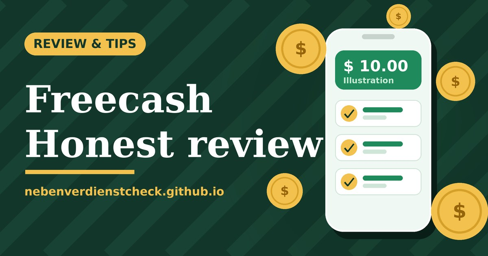

Affiliate disclosure: This page contains an affiliate link. If you sign up through it I may earn a commission at no extra cost to you.

Freecash review: is it really worth your time?
Earn by helping others
The next 3 friends who join and play a game earn you CHF 9.01 each (normally CHF 2.25). Your friend also receives CHF 10.
Plus CHF 10 more when your friend makes their first payout.
Start with my link (ad) As of 18 Oct 2026, per Freecash. Amounts, duration and conditions can change. Only real new users from eligible countries (CH, UK, CA, AU, KR, JP) are rewarded, no duplicate accounts. Full terms.bd2f617508How it works
Play fair: one account per person, no VPN, no self-referral. The bonus only applies if you live in an eligible country.
Freecash is a reward platform that pays for small tasks: trying apps, playing games up to a certain level and answering surveys. This review sticks to what the platform publicly says and the drawbacks you should know about. It is not a full-time income.
What kinds of tasks are there?
| Type | Effort | Reward (reported) |
|---|---|---|
| Surveys | 5-30 minutes | up to about 3, screen-outs happen |
| App tests / offers | often 1-5 minutes | roughly 1-70 per offer |
| Game levels | often many hours | roughly 1-100+, depends on the level |
These are upper limits of single offers, not averages. What you see depends on your country and device.
Payouts
According to Freecash's help centre you can cash out via PayPal, bank transfer, gift cards and crypto. The minimum is roughly 5 to 20 dollars depending on region and method. For your first payout you must verify your email and your ID (selfie plus document).
Pros and cons
See also how much is realistic and my tips before you start.